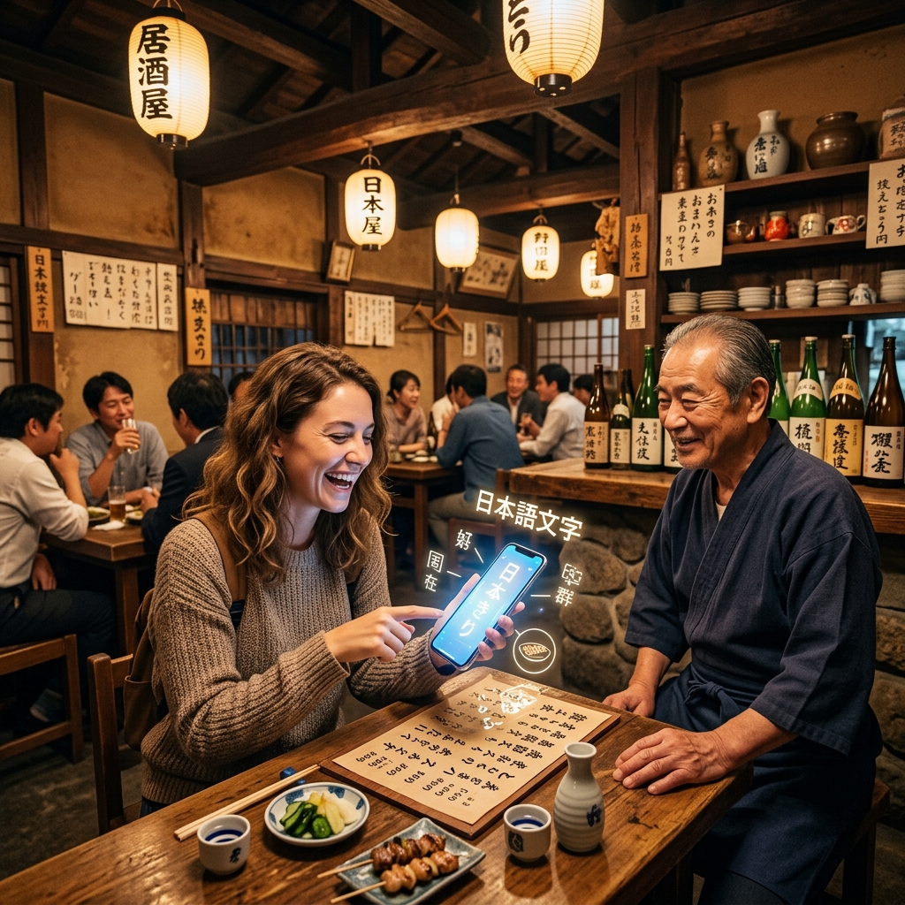

手書きのメニュー、独特のなまり、現金のみの会計。
大将のこだわりが詰まった最高のお店に、インバウンドの波を取り込む。
「翻訳」「注文」「決済」のすべてをスマホ一台で完結させる、
地方飲食店のためのローカライズSaaS。
メニューが手書きの日本語しかなく、身振手振りの説明に毎回5分以上も時間を奪われる。
注文の行き違いが頻発し、料理を残されたり、会計時にトラブルになりかけて疲弊する。
「現金のみ」と伝えると、外国人が帰ってしまう（機会損失が1日平均3組発生）。
お客さまのスマホをかざすだけ。自国語に翻訳されたメニューから勝手に注文が入る。
注文内容は自動で日本語に変換され、厨房のプリンターに直接伝票として出力される。
Apple Pay/WeChat Pay等でテーブルで事前決済。食い逃げリスクゼロ、レジ締め作業ゼロ。
地方特有の「あの悩み」を全て吸収する機能群。
「お通し」「もつ煮込み」「本日のおすすめ（黒板）」。海外には概念がない日本特有の食文化や独自のメニュー名を、AIが文脈を理解して適切に意訳。
スマホで手書きの黒板を撮影するだけで、一瞬で12カ国語のデジタルメニューが生成されます。
スタッフがレジに立つ必要はありません。Apple Pay, Google Pay, WeChat, Alipayなど、外国人観光客が普段使っている決済手段でテーブルから直接支払い完了。
豚肉やアルコール、そば等のアレルギー物質を自動検知してメニューに警告アイコンを表示。重大なトラブルを未然に防ぎます。
言葉が通じないことで発生する「追加注文ロス」をゼロへ。「この焼き鳥には、地元の冷酒が合いますよ」「最後の〆にうどんはいかがですか？」という気の利いたサジェストを、お客様の母国語で自動でポップアップさせます。
店主：山本様（62歳）
「以前は外国人が来ると『英語話せないから』と断ってしまっていました。NOMARKを入れてからは、テーブルのQRコードを指差すだけ。注文は日本語でキッチンのプリンターから出てくるので、我々は料理を作るだけで済むようになりました。本当に救われています。」
店主：佐藤様（45歳）
「手書きの黒板メニューが日替わりなので、アプリへの登録が面倒だと思っていました。でもこれはスマホで黒板の写真を撮るだけでAIが勝手に翻訳メニューを作ってくれる。凄すぎます。会計も終わった状態でテーブルを立つので、レジ業務が消滅しました。」
はい、完全にお使いいただけます。スタッフ様側で行う操作は「お客様にQRコードを見せること」と、「厨房のプリンターから出てきた日本語の注文伝票を見て料理を作ること」の2つだけです。複雑なIT操作は一切不要です。
専用の端末購入は不要です。初期費用は0円で、月額9,800円のシステム利用料のみで全機能がご利用いただけます。キッチンに注文を飛ばすための小型プリンターのみ、こちらから無料レンタルで手配いたします。
初期費用0円。いますぐ14日間の無料トライアルをお試しください。
※クレジットカードの登録は不要です